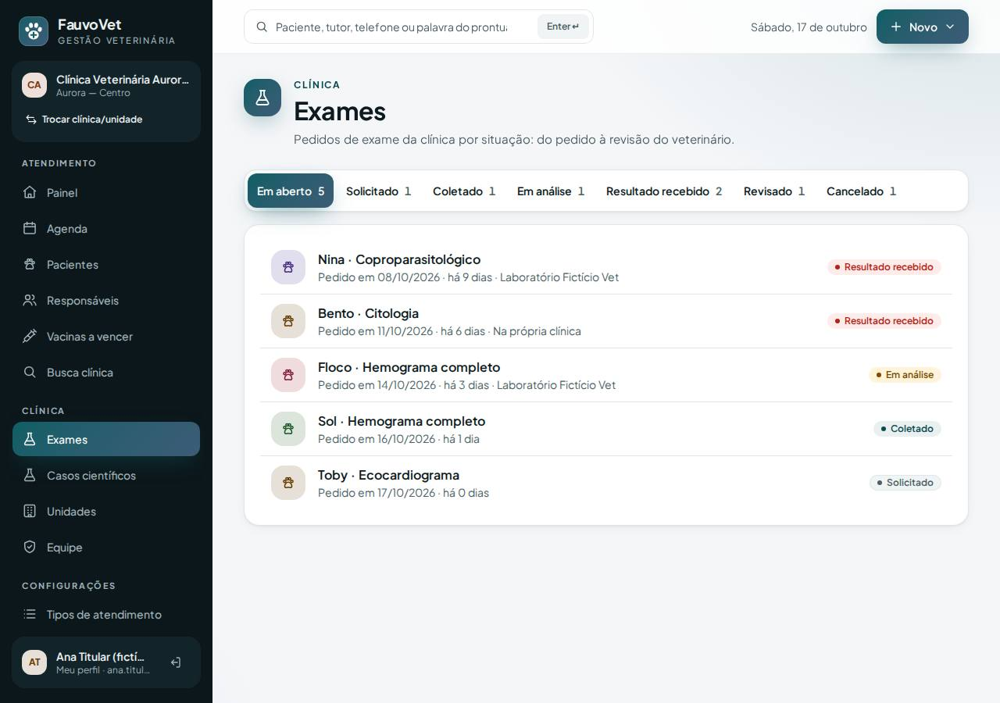
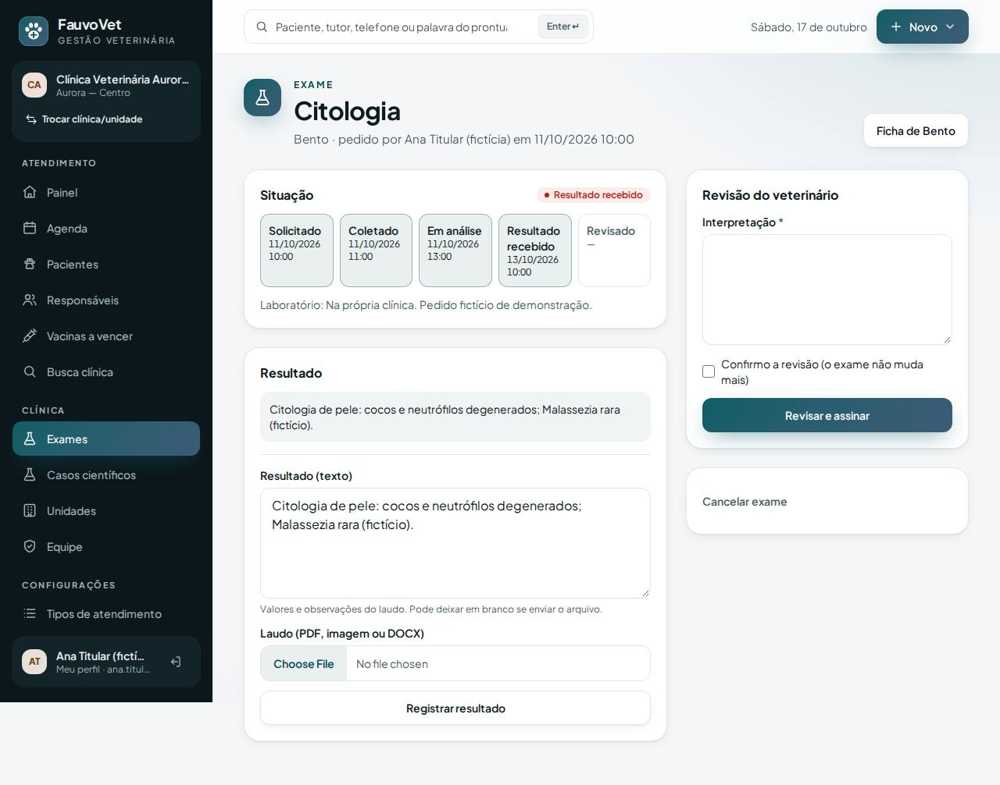
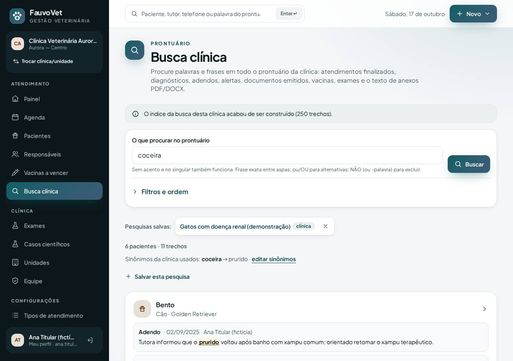
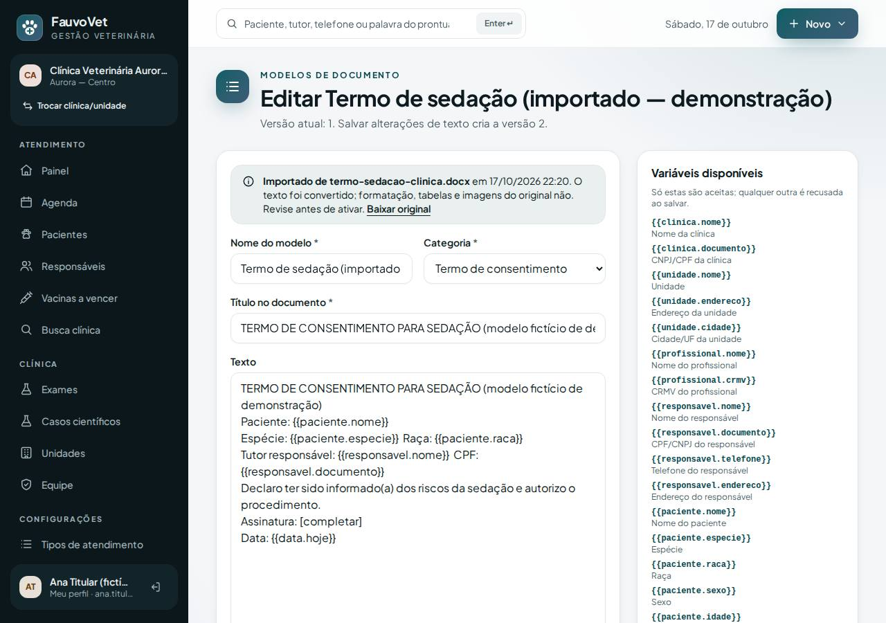
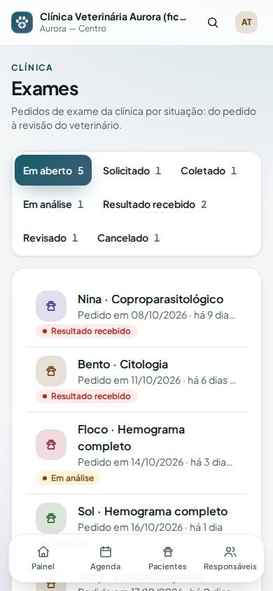

Sinônimos, pesquisas salvas e importação de modelos (fecha a Fase 2) + Exames (abre a Fase 3)
ID: 2026-10-20-fase2-fase3 · Data: 20/10/2026 · Versão: 0.15.0 · Módulos: Busca clínica, Documentos, Exames (ADR-019) · Estado: implementado e testado localmente; publicação única a cargo do proprietário (seção 7)
1. Objetivo
Pedido do proprietário: "finalizar a parte 2 e iniciar a 3 numa única entrega".
- Fase 2 (busca e documentos), encerrada:
- a clínica cria seus sinônimos ("coceira" = "prurido");
- salva pesquisas que usa sempre;
- importa os modelos que já usa (termos e atestados em Word ou PDF) sem redigitar.
- Fase 3 (consolidação clínica), iniciada: Exames, do pedido na ficha até a revisão assinada pelo veterinário, com painel por situação e resultado pesquisável.





2. O que mudou
Fase 2: busca
- Configurações → Sinônimos da busca (titular e veterinário):
- cada grupo lista expressões equivalentes, uma por linha;
- na busca, qualquer uma encontra todas, inclusive com
NÃO; - vale na hora, sem reconstruir o índice; a busca mostra "Sinônimos da clínica usados";
- nada vem pronto: equivalência clínica é decisão da equipe.
- Pesquisas salvas: na Busca clínica, Salvar esta pesquisa guarda o termo e os filtros.
- ficam como atalhos no topo da tela;
- são privadas, ou compartilhadas com a clínica se marcar a opção;
- quem criou ou o titular pode excluir.
Fase 2: importação de modelos
- Configurações → Modelos de documento → Importar DOCX/PDF.
- Original: guardado intacto, com hash, e disponível em Baixar original.
- Texto: vira o corpo do modelo, e o título sai da primeira linha.
- Lacunas: com rótulo conhecido ("Paciente: ____", "Tutor: ____", "CPF: ____", "Data: __/__/__") viram variáveis, como
{{paciente.nome}}. As demais viram[completar]. - Revisão: o modelo nasce desativado; ao revisar e ativar, vira versão 2.
- O que não é convertido: formatação, tabelas, imagens e timbre (a tela avisa).
- Recusados com mensagem: PDF digitalizado (sem texto), imagens e DOC antigo.
Fase 3: exames
- Menu → Exames: painel com abas por situação (Em aberto, Solicitado, Coletado, Em análise, Resultado recebido, Revisado, Cancelado), cada uma com contagem e dias desde o pedido.
- Pedido: na ficha do paciente, bloco Exames → escolher exame, laboratório e observações → Solicitar exame.
- Etapas: Avançar para a próxima situação. Dá para pular etapas (exame feito na clínica vai direto a "recebido"), mas não voltar. Cada etapa grava data e hora.
- Resultado: em texto e/ou laudo (PDF, imagem, DOCX). O laudo vira anexo do prontuário e o texto dele fica pesquisável.
- Revisão do veterinário: interpretação + confirmação → Revisar e assinar. Depois disso o exame não muda mais.
- Cancelamento com motivo. Pedidos nunca são apagados.
- Configurações → Catálogo de exames: 9 exames genéricos para ajustar ao laboratório da clínica; desativar em vez de apagar.
- Busca clínica: nome do exame, pedido, resultado e interpretação (origem "Exame"). O laudo anexado entra como anexo.
- Permissões: ver = equipe clínica; pedir, avançar e registrar resultado = veterinário/assistente/titular; revisar = só médico-veterinário. Recepção e financeiro: sem acesso. Tudo auditado, inclusive quem abriu o exame.
Demonstração v4
- 3 grupos de sinônimos (recusa alimentar / não se alimenta / anorexia; prurido / coceira; DRC / doença renal crônica);
- a pesquisa compartilhada "Gatos com doença renal (demonstração)";
- o "Termo de sedação" importado de DOCX;
- 7 exames, um em cada situação, como a creatinina revisada do Simba, a citologia do Bento esperando revisão e a Giardia da Nina.
Arquivos
- Migração:
2026_10_20_000001_create_phase2_close_and_exam_tables. - Busca e documentos:
ClinicalSearchService(sinônimos),SearchText,SearchSynonymController,SavedSearchController,app/Documents/TemplateImporter.php,DocumentTemplateController. - Exames:
ExamService,ExamController,ExamTypeController, modelosExamType/ExamRequest/ClinicalSearchSynonym/SavedSearch. - Telas:
resources/views/exams/*,search/synonyms,documents/template-import. - Permissões novas:
search:configureeexams:configure. - Índice de busca: versão 3, reconstruído sozinho na 1ª busca.
Dependências novas: nenhuma.
3. Pré-requisitos
Os mesmos das entregas anteriores. Se a entrega "busca em anexos" ainda não foi publicada, este pacote a inclui (rode pnpm bootstrap antes, por causa da biblioteca de PDF).
Git Bash/macOS: NOT RUN.
4. Passo a passo (no seu computador)
- Terminal
cd ~/code/fauvovet→git pull --ff-only→pnpm bootstrap→pnpm db:start→pnpm db:migrate. - Terminal
pnpm dev→ titular → Configurações → Dados de demonstração → Atualizar demonstração (ou Carregar).
5. Como testar
pnpm verify --e2e
pnpm test:tenant-isolationSearchSynonymAndSavedTest(5): nenhum sinônimo pronto, grupo expande consulta e exclusão, expressão sem aspas, edição/exclusão, pesquisas privadas × compartilhadas, permissões e isolamento.TemplateImportTest(3): DOCX → modelo desativado com variáveis, original idêntico no download, ativação vira versão 2, PDF com texto, recusa de imagem/PDF sem texto/nome repetido, recepção 403, isolamento.ExamTest(4): fluxo completo (não volta etapa, etapa pulada sem data, resultado + laudo pesquisáveis, revisão exige confirmação e assina, imutável), cancelamento, catálogo, permissões, isolamento + FK composta.DemoDataTest: cada passo abaixo, com os dados de demonstração.
Confirmar o funcionamento com os dados de demonstração
Na produção, depois de publicar (seção 7), entre com o usuário titular.
- Navegador Configurações → Dados de demonstração.
- Deve aparecer a faixa amarela "Demonstração desatualizada (versão 1 ou 3; a atual é 4)". Clique em Atualizar demonstração.
- Deve aparecer: "Demonstração atualizada: 22 pacientes, 33 atendimentos, 3 anexos, 7 exames e 3 casos científicos".
- Se não houver demonstração, use Carregar demonstração.
- Painel de exames: menu Exames (no celular, em "Mais opções").
- Deve aparecer: aba Em aberto 5, com Nina · Coproparasitológico e Bento · Citologia (Resultado recebido), Floco · Hemograma (Em análise), Sol · Hemograma (Coletado) e Toby · Ecocardiograma (Solicitado).
- A aba Revisado 1 mostra Simba · Bioquímica renal; Cancelado 1 mostra Pipoca · Urinálise.
- Revisar um exame: clique em Bento · Citologia.
- Deve aparecer: as etapas com data até "Resultado recebido", o resultado "cocos e neutrófilos degenerados; Malassezia rara" e, à direita, Revisão do veterinário.
- Escreva uma interpretação, marque "Confirmo a revisão" e clique em Revisar e assinar.
- Deve aparecer: "Revisado e assinado por (você) · CRMV… em (data). Somente leitura". O formulário de resultado some.
- Pedir um exame do zero: abra a ficha da Mia (ou de qualquer paciente) → bloco Exames → Pedir exame: Hemograma completo → Solicitar exame.
- Avançar para: Coletado → Atualizar situação.
- Escreva um resultado e anexe um PDF qualquer → Registrar resultado. A situação vira "Resultado recebido", e o laudo aparece com a etiqueta "Texto pesquisável".
- Exame na busca: Busca clínica →
giardia. Deve aparecer: Nina, com "Exame: Coproparasitológico — Resultado recebido" e o trecho "Giardia sp. POSITIVO". Clicar no título abre o exame. - Sinônimos: Configurações → Sinônimos da busca.
- Deve aparecer: 3 grupos, por exemplo "recusa alimentar = não se alimenta = anorexia".
- Na Busca clínica, digite
coceira. Deve aparecer: "Sinônimos da clínica usados: coceira → prurido" e pacientes com "prurido" destacado, como o Bento. - Busque também
anorexia(Simba e Frajola) eDRC(gatos com doença renal crônica).
- Criar um sinônimo seu: em Sinônimos da busca, crie o grupo "vômito / êmese" e busque
emese. Deve aparecer: o Bidu, com "Vômito e diarreia". - Pesquisas salvas: no topo da Busca clínica aparece o atalho Gatos com doença renal (demonstração), com a etiqueta "clínica".
- Clique nele: aplica
renal+ espécie Gato. - Faça uma busca sua → Salvar esta pesquisa → dê um nome → Salvar. O atalho aparece; o "x" exclui.
- Clique nele: aplica
- Modelo importado: Configurações → Modelos de documento.
- Deve aparecer "Termo de sedação (importado — demonstração) · versão 1 · desativado · importado de termo-sedacao-clinica.docx".
- Clique em Editar: a faixa "Importado de…" e o texto com
Paciente: {{paciente.nome}},CPF: {{responsavel.documento}},Assinatura: [completar]. Baixar original abre o DOCX. - Marque Ativo e salve: vira versão 2 e passa a aparecer em Emitir documento na ficha.
- Importar o seu próprio modelo: Modelos de documento → Importar DOCX/PDF. Envie um termo que a clínica já usa, em Word, com nome e categoria. Deve aparecer: a tela de edição com "Variáveis sugeridas: Paciente → {{paciente.nome}}…". Um PDF escaneado é recusado com explicação.
- Permissão: com um usuário de recepção, os menus Exames, Sinônimos e Catálogo de exames não aparecem, e os endereços respondem "Acesso negado".
6. Performance e usabilidade
- Local (WSL, seed + demonstração v4): 25 requisições entre painel de exames, abas e buscas com sinônimo: p50 39–40 ms, p95 48–60 ms, máx. 68 ms.
- Sinônimos: 1 consulta extra por variante do grupo (cada uma usa o índice de termos). Grupos grandes multiplicam consultas; recomendação: até ~10 expressões por grupo.
- Celular: abas dos exames quebram em linhas (nada passa da borda), formulários em coluna única; axe sem violações em Exames, detalhe, catálogo, Sinônimos e Importar.
- Volume grande: NOT RUN.
7. Publicação única na Locaweb
- Terminal
cd ~/code/fauvovet→git pull --ff-only→pnpm bootstrap→pnpm db:start→pnpm verify --e2e→pnpm deploy:package→pnpm deploy:copiar - Painel Locaweb backup do banco.
- Terminal
pnpm deploy:token. - FileZilla
.envdo servidor:DEPLOY_TOOLS_ENABLED=true+ token novo; mantenhaFAUVOVET_DEMO_DATA=true; envie e apaguebootstrap/cache/config.php. - FileZilla
app-fauvovet(tudo excetostorage) epublic_html/fauvovet, com Sobrescrever. - Terminal
diagnostico→pending_migrations: 1 se a "busca em anexos" já foi publicada, ou 2 se não →migrar→otimizar. - FileZilla
DEPLOY_TOOLS_ENABLED=false→ enviar → apagarbootstrap/cache/config.php. - Terminal
SMOKE_URL=https://dradeboragaldino.com.br/fauvovet pnpm smoke(5 PASS). - Navegador seção 5, "Confirmar o funcionamento com os dados de demonstração", começando por Atualizar demonstração.
- Navegador Configurações → Catálogo de exames: ajuste os 9 exames genéricos aos que a clínica realmente pede.
Sem HTTPS válido, só dados fictícios. Antes do primeiro paciente real: remover a demonstração e voltar FAUVOVET_DEMO_DATA=false.
8. Rollback
- Código: reenvie o pacote anterior em
.deploy/+ otimizar. As tabelas novas ficam sem uso; o índice de busca da versão anterior é reconstruído sozinho. - Banco: restaure o backup do passo 2 (exames e sinônimos criados depois somem).
- Local:
git revertemigrate:rollback --step=1(só desenvolvimento).
9. Troubleshooting
| Sintoma | Causa e solução |
|---|---|
| Exemplos do guia não aparecem | Demonstração desatualizada: Atualizar demonstração. |
| Sinônimo não funciona | O grupo precisa de duas expressões diferentes. Palavras comuns ("de", "com") sozinhas são ignoradas. Confira em Sinônimos da busca. |
| "Não foi possível converter" ao importar | PDF digitalizado ou protegido. Digite o modelo em Novo modelo, ou salve o Word como DOCX e importe. |
| Modelo importado não aparece ao emitir | Ele nasce desativado: revise e marque Ativo. |
| Botão "Revisar e assinar" ausente | Só aparece com o resultado recebido e para médico-veterinário (assistente não assina). |
| "Etapa inválida" | Exames só avançam; revisão é feita no quadro "Revisão do veterinário". |
| Erro 500 em Exames | Migração não aplicada: diagnostico → migrar. |
10. Evidências e status
| Verificação | Status | Detalhe |
|---|---|---|
pnpm verify --e2e | PASS | 9/9 etapas |
| PHPUnit | PASS | 193 testes (13 novos: sinônimos/pesquisas 5, importação 3, exames 4, demonstração v4 1) |
| Isolamento | PASS | 46 testes (3 novos: sinônimos/pesquisas, modelo importado, exames + FK composta) |
| E2E + axe + borda no celular | PASS | 81 testes; exame do pedido à revisão, sinônimo + pesquisa salva, demonstração (exames e sinônimos), axe em Exames, detalhe, catálogo, Sinônimos e Importar |
| Aceite §3.3 (busca) — todos os 10 exemplos | PASS | ex. 6 agora também por sinônimo da clínica; demais cobertos nas entregas anteriores |
| Exames estruturados (faixa de referência), integração com laboratório, OCR, DOC legado | NOT RUN | Fora desta entrega (docs/IDEAS.md) |
Commit: registrado no docs/PROGRESS.md após a sincronização.
Próximo passo sugerido (Fase 3): exames estruturados (valores com faixa de referência por espécie, alerta de fora da faixa e gráfico comparativo), depois prescrição estruturada ou internação.